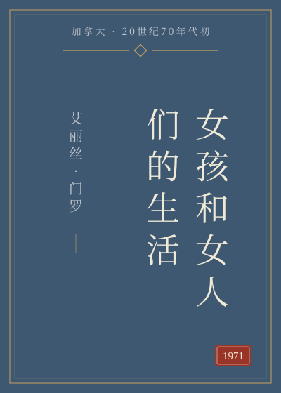
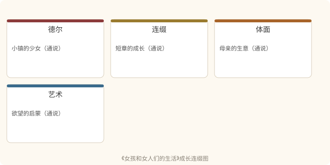

女孩和女人们的生活
一、基本信息
| 作者 | 艾丽丝·门罗 |
|---|---|
| 成书/出版 | 作者页注记：Britannica 存目（年份通说待核——1971说） Alice Munro — Encyclopaedia Britannica（百科全书） |
| 国别/地区 | 加拿大 |
| 时代 | 近代 · 20世纪70年代初 |
| 体裁 | 长篇小说（连缀短章） |
| 语言 | 英语 |

《女孩和女人们的生活》成长连缀图（主题·结构图）
二、创作背景
作者页注记：女孩和女人们的生活——'（Britannica 存目）'。
Britannica：门罗——2013诺奖（作者页交叉——待核）。
题材（通说待核）：德尔·乔丹的成长——安大略小镇'朱比利路'的连缀章。
三、内容脉络
（通说待核）德尔与母亲：小镇的'体面'与性启蒙。
（通说待核）'艺术'章：相机先生（通说待核）。
四、主要人物表
| 人物 | 身份 | 说明 |
|---|---|---|
| 德尔·乔丹 | 少女 | （通说待核） |
| 母亲 | 推销员 | （通说待核） |
五、主题与艺术特点
- '连缀短章'的成长小说（通说待核）。
- 小镇女性的身体与知识（通说待核）。
- 门罗的'诺奖'语境（作者页交叉——待核）。
六、影响与评论
- Britannica：存目（作者页注记）。
Alice Munro — Encyclopaedia Britannica（百科全书） - Britannica：2013诺奖（作者页交叉——待核）。
Alice Munro — Encyclopaedia Britannica（百科全书）
七、阅读建议
难点
- 连缀章的边界。
- 1940-50年代安大略。
- 《女孩和女人们的生活》中译本（南海出版公司等——通说待核）。
- 英文原版。
门罗唯一'长篇'；与《逃离》对读。
八、待核实
- 1971年出版细节待核。
- 德尔·乔丹人名核对（通说）。
- '朱比利路'细节待核。